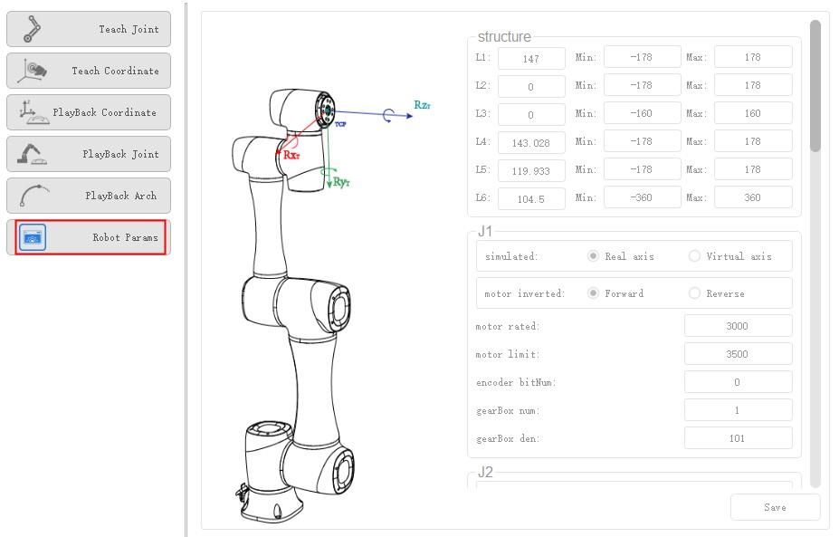

RobotParams
You can set the velocity, acceleration or other parameters in different coordinate systems when jogging a robot or running robot programs. After setting the parameters, please click Save. Click Parameter > RobotParams to enter RobotParams interface.
- Teach Joint Parameter: Set the maximum velocity and acceleration in the Joint coordinate system when jogging the robot.
- Teach Coordinate: Set the maximum velocity and acceleration in the Cartesian coordinate system when jogging a robot.
- Playback Coordinate Parameter: Set the maximum velocity, acceleration and jerk in the Cartesian coordinate system when running robot programs.
- Playback Joint Parameter: Set the maximum velocity, acceleration, and jerk in the Joint coordinate system when running robot programs.
- Playback Arch Parameter: If the motion mode is Jump when running robot programs, you will need to set StartHeight, EndHeight, and zLimit. You can set 10 sets of Jump parameters.